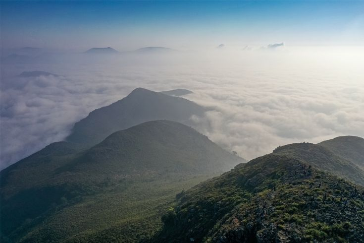

About Vanajangi
Vanajangi is a beautiful mountain destination in the Visakhapatnam region of Andhra Pradesh. It is especially popular for its mountain views, clouds, and sunrise scenery.
Many visitors travel to Vanajangi early in the morning to experience the beautiful views above the clouds. It is also a popular location for photography and nature lovers.
Photo Gallery
